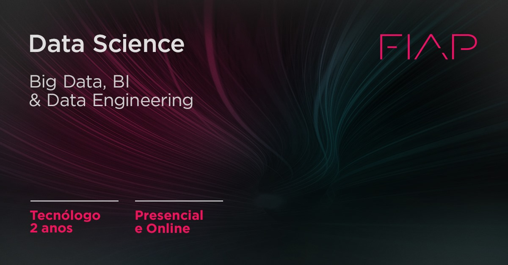

Cursos da Fiap

Tecnologia em Banco de Dados prepara você para entender e utilizar melhor os dados, criando soluções inovadoras a partir de um fluxo de conteúdo monitorado e analisado. E personalizando os serviços prestados por meio da construção de bases de dados para tomada de decisão e aplicação dos conceitos de BI (Business Intelligence) relacionados à modelagem de indicadores de desempenho, integração de dados corporativos e visualização das informações. Aprenda ou aprofunde seus conhecimentos em aspectos técnicos, de infraestrutura e tuning, para desempenhar papel estratégico nas empresas e dar suporte à área de negócios, garantindo a segurança e integridade das informações das organizações. Tudo isso por meio do uso de tecnologias como Big Data, Cloud Computing e Mobilidade. Através do conceito de Big Data, organize as fontes de dados e utilize-as obtendo insights que embasem as corporações para a melhoria da operação do seu negócio
Tecnologia em Banco de Dados prepara você para entender e utilizar melhor os dados, criando soluções inovadoras a partir de um fluxo de conteúdo monitorado e analisado. E personalizando os serviços prestados por meio da construção de bases de dados para tomada de decisão e aplicação dos conceitos de BI (Business Intelligence) relacionados à modelagem de indicadores de desempenho, integração de dados corporativos e visualização das informações. Aprenda ou aprofunde seus conhecimentos em aspectos técnicos, de infraestrutura e tuning, para desempenhar papel estratégico nas empresas e dar suporte à área de negócios, garantindo a segurança e integridade das informações das organizações. Tudo isso por meio do uso de tecnologias como Big Data, Cloud Computing e Mobilidade. Através do conceito de Big Data, organize as fontes de dados e utilize-as obtendo insights que embasem as corporações para a melhoria da operação do seu negócio